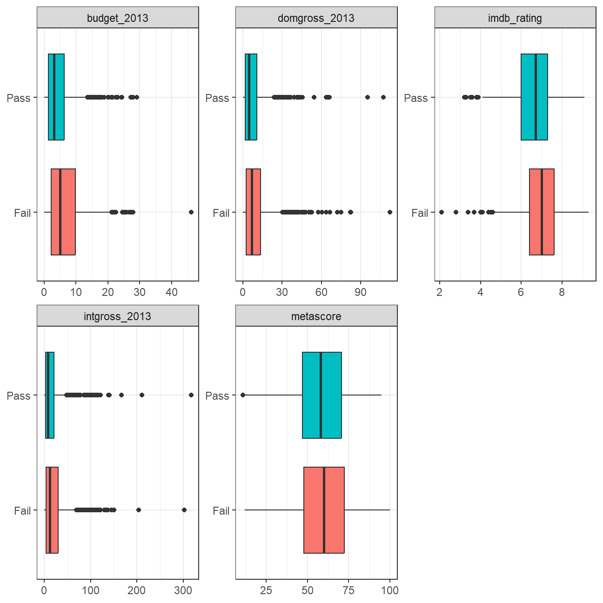
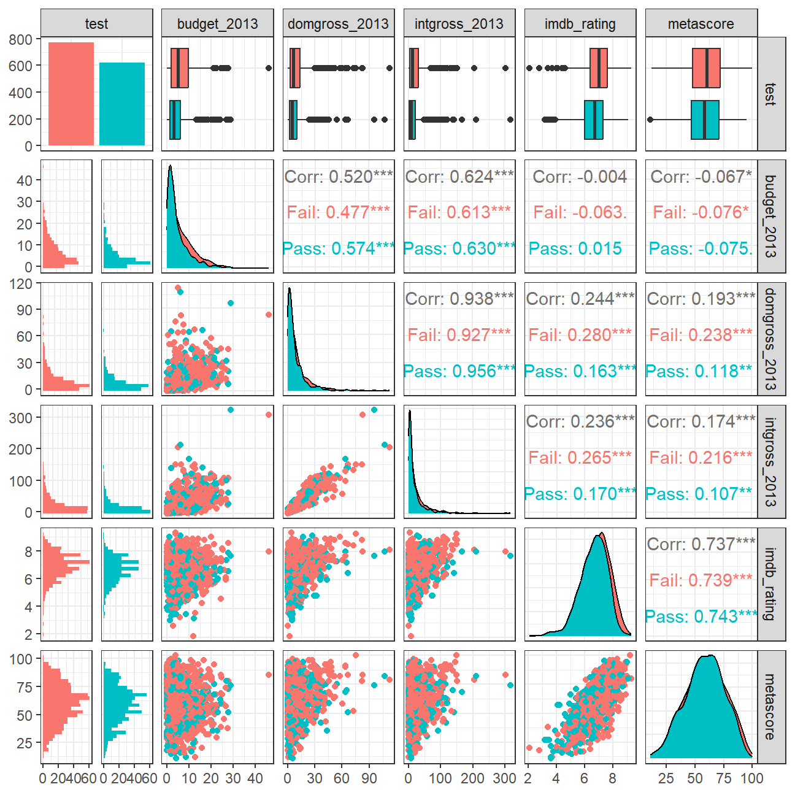
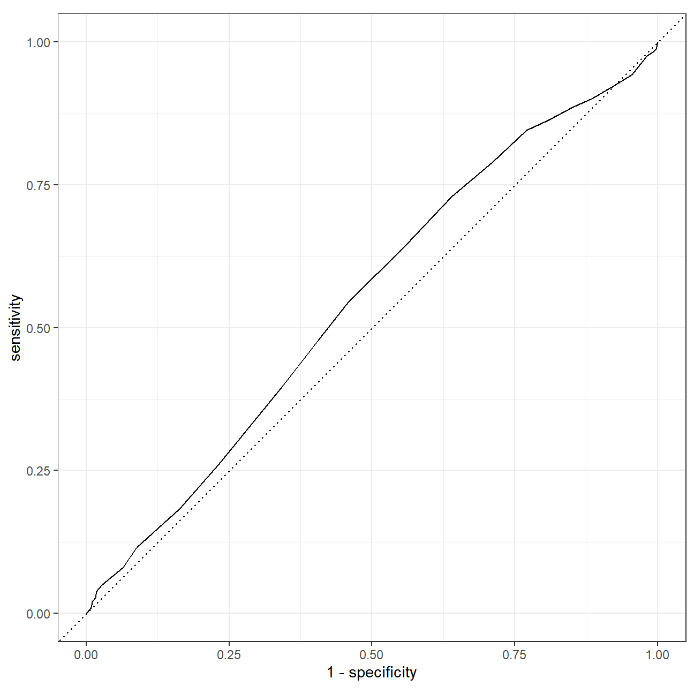
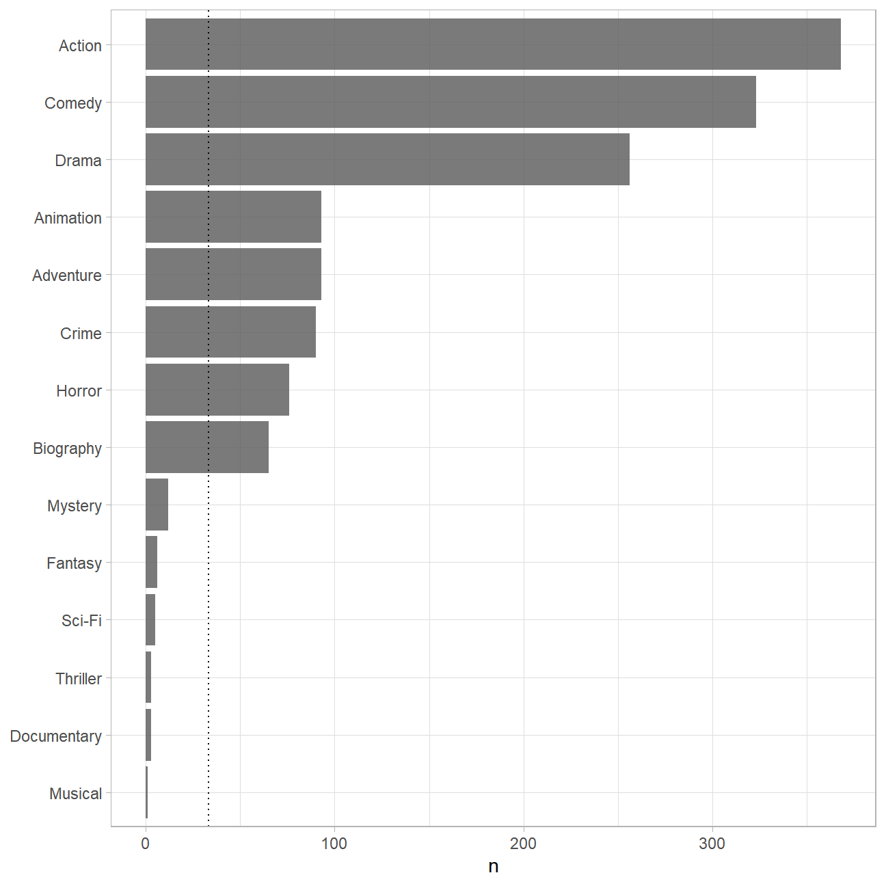
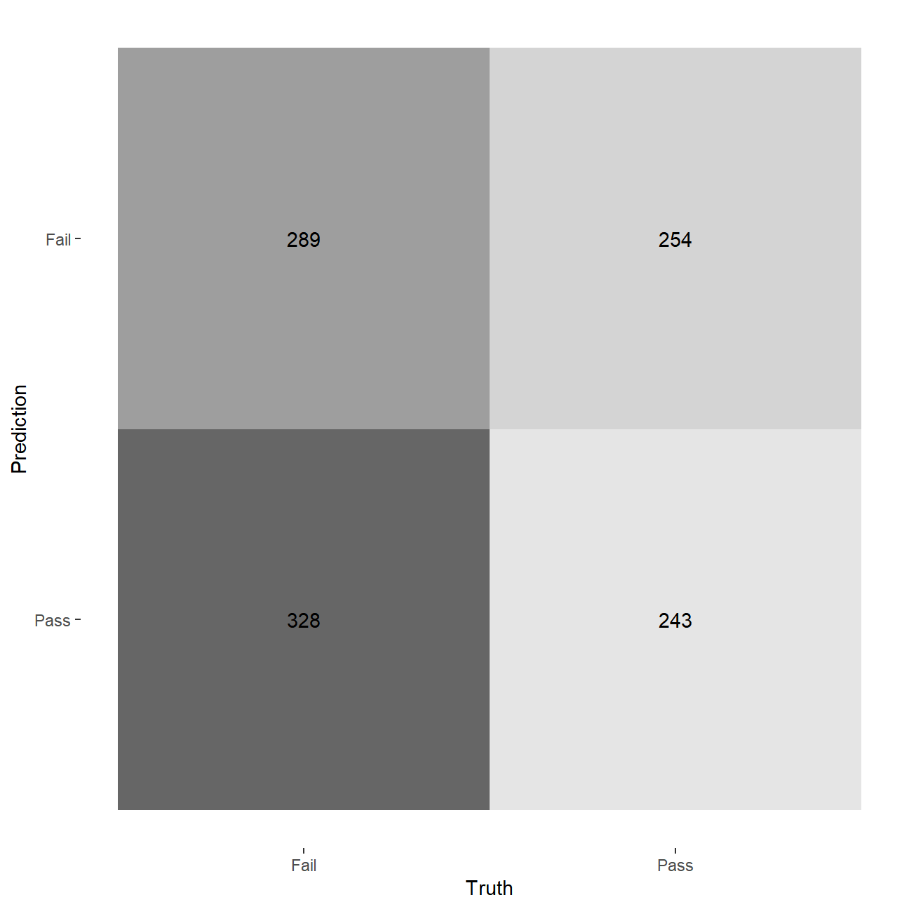
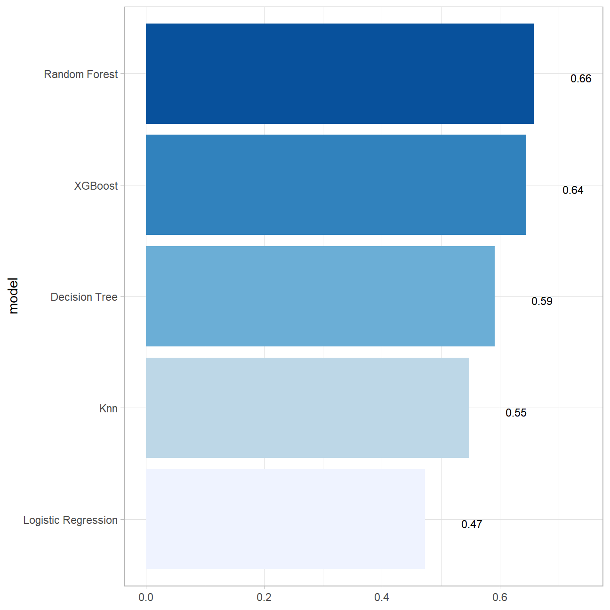

title: ‘Homework 4: Machine Learning’
author: “Jean-Michel Staelens”
date: “2023-06-08”
output:
word_document:
toc: yes
pdf_document:
toc: yes
html_document:
theme: flatly
highlight: zenburn
number_sections: yes
toc: yes
toc_float: yes
code_folding: show
—
The Bechdel Test
https://fivethirtyeight.com/features/the-dollar-and-cents-case-against-hollywoods-exclusion-of-women/
The Bechdel test is a way to assess how women are depicted in Hollywood movies. In order for a movie to pass the test:
- It has to have at least two [named] women in it
- Who talk to each other
- About something besides a man
There is a nice article and analysis you can find here https://fivethirtyeight.com/features/the-dollar-and-cents-case-against-hollywoods-exclusion-of-women/ We have a sample of 1394 movies and we want to fit a model to predict whether a film passes the test or not.
bechdel <- read_csv(here::here("data", "bechdel.csv")) %>%
mutate(test = factor(test))
## Rows: 1394 Columns: 10
## ── Column specification ────────────────────────────────────────────────────────
## Delimiter: ","
## chr (4): title, test, rated, genre
## dbl (6): year, budget_2013, domgross_2013, intgross_2013, metascore, imdb_ra...
##
## ℹ Use `spec()` to retrieve the full column specification for this data.
## ℹ Specify the column types or set `show_col_types = FALSE` to quiet this message.
## Rows: 1,394
## Columns: 10
## $ year <dbl> 2013, 2013, 2013, 2013, 2013, 2013, 2013, 2013, 2013, 20…
## $ title <chr> "12 Years a Slave", "2 Guns", "42", "47 Ronin", "A Good …
## $ test <fct> Fail, Fail, Fail, Fail, Fail, Pass, Pass, Fail, Pass, Pa…
## $ budget_2013 <dbl> 2.00, 6.10, 4.00, 22.50, 9.20, 1.20, 1.30, 13.00, 4.00, …
## $ domgross_2013 <dbl> 5.3107035, 7.5612460, 9.5020213, 3.8362475, 6.7349198, 1…
## $ intgross_2013 <dbl> 15.8607035, 13.2493015, 9.5020213, 14.5803842, 30.424919…
## $ rated <chr> "R", "R", "PG-13", "PG-13", "R", "R", "PG-13", "PG-13", …
## $ metascore <dbl> 97, 55, 62, 29, 28, 55, 48, 33, 90, 58, 52, 78, 83, 53, …
## $ imdb_rating <dbl> 8.3, 6.8, 7.6, 6.6, 5.4, 7.8, 5.7, 5.0, 7.5, 7.4, 6.2, 7…
## $ genre <chr> "Biography", "Action", "Biography", "Action", "Action", …
How many films fail/pass the test, both as a number and as a %?
bechdel %>%
# count number of observation per test value
count(test) %>%
# calculate number of observations per test value as percentage of total observations
mutate(prop = n/sum(n))
## # A tibble: 2 × 3
## test n prop
## <fct> <int> <dbl>
## 1 Fail 772 0.554
## 2 Pass 622 0.446
Movie scores
ggplot(data = bechdel, aes(
x = metascore,
y = imdb_rating,
colour = test
)) +
geom_point(alpha = .3, size = 3) +
scale_colour_manual(values = c("tomato", "olivedrab")) +
labs(
x = "Metacritic score",
y = "IMDB rating",
colour = "Bechdel test"
) +
theme_light()

Split the data
# **Split the data**
set.seed(123)
data_split <- initial_split(bechdel, # updated data
prop = 0.8,
strata = test)
bechdel_train <- training(data_split)
bechdel_test <- testing(data_split)
Check the counts and % (proportions) of the test variable in each set.
# train set
bechdel_train %>%
# count number of observation per test value
count(test) %>%
# calculate number of observations per test value as percentage of total observations
mutate(prop = n/sum(n))
## # A tibble: 2 × 3
## test n prop
## <fct> <int> <dbl>
## 1 Fail 617 0.554
## 2 Pass 497 0.446
# test set
bechdel_test %>%
# count number of observation per test value
count(test) %>%
# calculate number of observations per test value as percentage of total observations
mutate(prop = n/sum(n))
## # A tibble: 2 × 3
## test n prop
## <fct> <int> <dbl>
## 1 Fail 155 0.554
## 2 Pass 125 0.446
# the fail - pass split in both sets is about 55% which is consistent and in line with the split in the original dataset. We believe both the train and the test dataset are therefore representable.
Feature exploration
Any outliers?
bechdel %>%
select(test, budget_2013, domgross_2013, intgross_2013, imdb_rating, metascore) %>%
pivot_longer(cols = 2:6,
names_to = "feature",
values_to = "value") %>%
ggplot()+
aes(x=test, y = value, fill = test)+
coord_flip()+
geom_boxplot()+
facet_wrap(~feature, scales = "free")+
theme_bw()+
theme(legend.position = "none")+
labs(x=NULL,y = NULL)

# Outliers can be observed for every variable. THe domestic and international gross revenue variable however seems to be particularly sensitive to outliers. To a lower degree, outliers are commen in the budget_2013 variable (and the imdb_rating). Therefore, there are indications it might be worhtwile to transform this data moving forward.
Scatterplot - Correlation Matrix
Write a paragraph discussing the output of the following
bechdel %>%
select(test, budget_2013, domgross_2013, intgross_2013, imdb_rating, metascore)%>%
ggpairs(aes(colour=test), alpha=0.2)+
theme_bw()

# First, we observe that international and domestic gross product is highly correlated. Consequently, it might be better to only corporate one of these variables into our model. Additionally, to a lesser extent we can draw the same conclusion in regards to the meta- and imdb score as critics generally seem to align their verdicts. Finally, a higher budget generally seems to lead to higher revenues but does not translate to better scores.
# second, in line with what we previously concluded, certain variables seem to have a highly skewed distribution. For example, budget and dom / inter gross revenue seem to be particularly highly skewed towards the rights. Potentially, the log or expenont of these variables is a more valuable predictor.
Categorical variables
Write a paragraph discussing the output of the following
bechdel %>%
group_by(genre, test) %>%
summarise(n = n()) %>%
mutate(prop = n/sum(n))
## `summarise()` has grouped output by 'genre'. You can override using the
## `.groups` argument.
## # A tibble: 24 × 4
## # Groups: genre [14]
## genre test n prop
## <chr> <fct> <int> <dbl>
## 1 Action Fail 260 0.707
## 2 Action Pass 108 0.293
## 3 Adventure Fail 52 0.559
## 4 Adventure Pass 41 0.441
## 5 Animation Fail 63 0.677
## 6 Animation Pass 30 0.323
## 7 Biography Fail 36 0.554
## 8 Biography Pass 29 0.446
## 9 Comedy Fail 138 0.427
## 10 Comedy Pass 185 0.573
## # ℹ 14 more rows
# There seems to be a strong correlation between movie genre and the likelihood that the movie will pass the bechdel test. Action movies for example fail on about 70% of the occasion in comparison to an overall fail grade of 55%. Animations seem to have a higher likelihood to fail as well at 67% in contrast to comedies where the overal fail grade is only 43%.
bechdel %>%
group_by(rated, test) %>%
summarise(n = n()) %>%
mutate(prop = n/sum(n))
## `summarise()` has grouped output by 'rated'. You can override using the
## `.groups` argument.
## # A tibble: 10 × 4
## # Groups: rated [5]
## rated test n prop
## <chr> <fct> <int> <dbl>
## 1 G Fail 16 0.615
## 2 G Pass 10 0.385
## 3 NC-17 Fail 5 0.833
## 4 NC-17 Pass 1 0.167
## 5 PG Fail 115 0.561
## 6 PG Pass 90 0.439
## 7 PG-13 Fail 283 0.529
## 8 PG-13 Pass 252 0.471
## 9 R Fail 353 0.568
## 10 R Pass 269 0.432
# The rating seems to be slightly correlated but to a much lower extent than the movie genre. In addition, there might be an underlying correlation between rating and genre. Overall, most proportions seem to be in line with the expected overall averages in exception of the NC-17 rating. However, due to the low sample of 6 movies with this rating we cannot draw too much value to this observation.
Cross Validation
Run the code below. What does it return?
set.seed(123)
bechdel_folds <- vfold_cv(data = bechdel_train,
v = 10,
strata = test)
bechdel_folds
## # 10-fold cross-validation using stratification
## # A tibble: 10 × 2
## splits id
## <list> <chr>
## 1 <split [1002/112]> Fold01
## 2 <split [1002/112]> Fold02
## 3 <split [1002/112]> Fold03
## 4 <split [1002/112]> Fold04
## 5 <split [1002/112]> Fold05
## 6 <split [1002/112]> Fold06
## 7 <split [1002/112]> Fold07
## 8 <split [1004/110]> Fold08
## 9 <split [1004/110]> Fold09
## 10 <split [1004/110]> Fold10
fit_resamples()
Trains and tests a resampled model.
lr_fit <- lr_mod %>%
fit_resamples(
test ~ metascore + imdb_rating,
resamples = bechdel_folds
)
tree_fit <- tree_mod %>%
fit_resamples(
test ~ metascore + imdb_rating,
resamples = bechdel_folds
)
## Warning: package 'C50' was built under R version 4.2.3
collect_metrics()
Unnest the metrics column from a tidymodels fit_resamples()
## # A tibble: 2 × 6
## .metric .estimator mean n std_err .config
## <chr> <chr> <dbl> <int> <dbl> <chr>
## 1 accuracy binary 0.575 10 0.0149 Preprocessor1_Model1
## 2 roc_auc binary 0.606 10 0.0189 Preprocessor1_Model1
collect_metrics(tree_fit)
## # A tibble: 2 × 6
## .metric .estimator mean n std_err .config
## <chr> <chr> <dbl> <int> <dbl> <chr>
## 1 accuracy binary 0.571 10 0.0156 Preprocessor1_Model1
## 2 roc_auc binary 0.547 10 0.0201 Preprocessor1_Model1
tree_preds <- tree_mod %>%
fit_resamples(
test ~ metascore + imdb_rating,
resamples = bechdel_folds,
control = control_resamples(save_pred = TRUE) #<<
)
# What does the data for ROC look like?
tree_preds %>%
collect_predictions() %>%
roc_curve(truth = test, .pred_Fail)
## # A tibble: 29 × 3
## .threshold specificity sensitivity
## <dbl> <dbl> <dbl>
## 1 -Inf 0 1
## 2 0.262 0 1
## 3 0.317 0.00201 0.989
## 4 0.373 0.00805 0.982
## 5 0.440 0.0181 0.976
## 6 0.459 0.0443 0.943
## 7 0.460 0.0765 0.924
## 8 0.464 0.115 0.901
## 9 0.465 0.147 0.887
## 10 0.465 0.191 0.864
## # ℹ 19 more rows
# Draw the ROC
tree_preds %>%
collect_predictions() %>%
roc_curve(truth = test, .pred_Fail) %>%
autoplot()

Build a better training set with recipes
Preprocessing options
- Encode categorical predictors
- Center and scale variables
- Handle class imbalance
- Impute missing data
- Perform dimensionality reduction
- … …
To build a recipe
- Start the
recipe()
- Define the variables involved
- Describe preprocessing [step-by-step]
Collapse Some Categorical Levels
Do we have any genre with few observations? Assign genres that have less than 3% to a new category ‘Other’

movie_rec <-
recipe(test ~ .,
data = bechdel_train) %>%
# Genres with less than 5% will be in a catewgory 'Other'
step_other(genre, threshold = .03)
Before recipe
## # A tibble: 14 × 2
## genre n
## <chr> <int>
## 1 Action 293
## 2 Comedy 254
## 3 Drama 213
## 4 Adventure 75
## 5 Animation 72
## 6 Crime 68
## 7 Horror 68
## 8 Biography 50
## 9 Mystery 7
## 10 Fantasy 5
## 11 Sci-Fi 3
## 12 Thriller 3
## 13 Documentary 2
## 14 Musical 1
After recipe
movie_rec %>%
prep() %>%
bake(new_data = bechdel_train) %>%
count(genre, sort = TRUE)
## # A tibble: 9 × 2
## genre n
## <fct> <int>
## 1 Action 293
## 2 Comedy 254
## 3 Drama 213
## 4 Adventure 75
## 5 Animation 72
## 6 Crime 68
## 7 Horror 68
## 8 Biography 50
## 9 other 21
step_dummy()
Converts nominal data into numeric dummy variables
movie_rec <- recipe(test ~ ., data = bechdel) %>%
step_other(genre, threshold = .03) %>%
step_dummy(all_nominal_predictors())
movie_rec
##
## ── Recipe ──────────────────────────────────────────────────────────────────────
##
## ── Inputs
## Number of variables by role
## outcome: 1
## predictor: 9
##
## ── Operations
## • Collapsing factor levels for: genre
## • Dummy variables from: all_nominal_predictors()
Let’s think about the modelling
What if there were no films with rated NC-17 in the training data?
Will the model have a coefficient for rated NC-17?
No, the model will not have a coefficient for rated NC-17.
What will happen if the test data includes a film with rated NC-17?
The model will throw an error in this scenario if nothing is done.
step_novel()
Adds a catch-all level to a factor for any new values not encountered in model training, which lets R intelligently predict new levels in the test set.
movie_rec <- recipe(test ~ ., data = bechdel) %>%
step_other(genre, threshold = .03) %>%
step_novel(all_nominal_predictors) %>% # Use *before* `step_dummy()` so new level is dummified
step_dummy(all_nominal_predictors())
step_zv()
Intelligently handles zero variance variables (variables that contain only a single value)
movie_rec <- recipe(test ~ ., data = bechdel) %>%
step_other(genre, threshold = .03) %>%
step_novel(all_nominal(), -all_outcomes()) %>% # Use *before* `step_dummy()` so new level is dummified
step_dummy(all_nominal(), -all_outcomes()) %>%
step_zv(all_numeric(), -all_outcomes())
step_normalize()
Centers then scales numeric variable (mean = 0, sd = 1)
movie_rec <- recipe(test ~ ., data = bechdel) %>%
step_other(genre, threshold = .03) %>%
step_novel(all_nominal(), -all_outcomes()) %>% # Use *before* `step_dummy()` so new level is dummified
step_dummy(all_nominal(), -all_outcomes()) %>%
step_zv(all_numeric(), -all_outcomes()) %>%
step_normalize(all_numeric())
step_corr()
Removes highly correlated variables
movie_rec <- recipe(test ~ ., data = bechdel) %>%
step_other(genre, threshold = .03) %>%
step_novel(all_nominal(), -all_outcomes()) %>% # Use *before* `step_dummy()` so new level is dummified
step_dummy(all_nominal(), -all_outcomes()) %>%
step_zv(all_numeric(), -all_outcomes()) %>%
step_normalize(all_numeric()) # %>%
# step_corr(all_predictors(), threshold = 0.75, method = "spearman")
# Professor told us to delete this line
movie_rec
##
## ── Recipe ──────────────────────────────────────────────────────────────────────
##
## ── Inputs
## Number of variables by role
## outcome: 1
## predictor: 9
##
## ── Operations
## • Collapsing factor levels for: genre
## • Novel factor level assignment for: all_nominal(), -all_outcomes()
## • Dummy variables from: all_nominal(), -all_outcomes()
## • Zero variance filter on: all_numeric(), -all_outcomes()
## • Centering and scaling for: all_numeric()
Define different models to fit
## Model Building
# 1. Pick a `model type`
# 2. set the `engine`
# 3. Set the `mode`: regression or classification
# Logistic regression
log_spec <- logistic_reg() %>% # model type
set_engine(engine = "glm") %>% # model engine
set_mode("classification") # model mode
# Show your model specification
log_spec
## Logistic Regression Model Specification (classification)
##
## Computational engine: glm
# Decision Tree
tree_spec <- decision_tree() %>%
set_engine(engine = "C5.0") %>%
set_mode("classification")
tree_spec
## Decision Tree Model Specification (classification)
##
## Computational engine: C5.0
# Random Forest
library(ranger)
## Warning: package 'ranger' was built under R version 4.2.3
rf_spec <-
rand_forest() %>%
set_engine("ranger", importance = "impurity") %>%
set_mode("classification")
# Boosted tree (XGBoost)
library(xgboost)
## Warning: package 'xgboost' was built under R version 4.2.3
##
## Attaching package: 'xgboost'
## The following object is masked from 'package:dplyr':
##
## slice
xgb_spec <-
boost_tree() %>%
set_engine("xgboost") %>%
set_mode("classification")
# K-nearest neighbour (k-NN)
knn_spec <-
nearest_neighbor(neighbors = 4) %>% # we can adjust the number of neighbors
set_engine("kknn") %>%
set_mode("classification")
Bundle recipe and model with workflows
log_wflow <- # new workflow object
workflow() %>% # use workflow function
add_recipe(movie_rec) %>% # use the new recipe
add_model(log_spec) # add your model spec
# show object
log_wflow
## ══ Workflow ════════════════════════════════════════════════════════════════════
## Preprocessor: Recipe
## Model: logistic_reg()
##
## ── Preprocessor ────────────────────────────────────────────────────────────────
## 5 Recipe Steps
##
## • step_other()
## • step_novel()
## • step_dummy()
## • step_zv()
## • step_normalize()
##
## ── Model ───────────────────────────────────────────────────────────────────────
## Logistic Regression Model Specification (classification)
##
## Computational engine: glm
## A few more workflows
tree_wflow <-
workflow() %>%
add_recipe(movie_rec) %>%
add_model(tree_spec)
rf_wflow <-
workflow() %>%
add_recipe(movie_rec) %>%
add_model(rf_spec)
xgb_wflow <-
workflow() %>%
add_recipe(movie_rec) %>%
add_model(xgb_spec)
knn_wflow <-
workflow() %>%
add_recipe(movie_rec) %>%
add_model(knn_spec)
HEADS UP
How many models have you specified?
We have specified five models: logistic regression, knn, random forest, decision tree and XG boost.
What’s the difference between a model specification and a workflow?
The model specification defines the model type and allows us to tune the model with our own parameter preferences. The workflow captures the entire data flow from preparation to deployment (aided by chatGPT).
Do you need to add a formula (e.g., test ~ .) if you have a recipe?
No, this is being derived from the recipe where it is pre-specified.
Model Comparison
You now have all your models. Adapt the code from slides code-from-slides-CA-housing.R, line 400 onwards to assess which model gives you the best classification.
## Evaluate Models
# Use k-fold cross validation to build a set of 10 validation folds
set.seed(123)
cv_folds <-
vfold_cv(bechdel_train,
v = 10,
strata = test)
## Logistic regression results{.smaller}
log_res <- log_wflow %>%
fit_resamples(
resamples = cv_folds,
metrics = metric_set(
recall, precision, f_meas, accuracy,
kap, roc_auc, sens, spec),
control = control_resamples(save_pred = TRUE))
## → A | warning: glm.fit: algorithm did not converge
##
There were issues with some computations A: x1
→ B | warning: prediction from a rank-deficient fit may be misleading
## There were issues with some computations A: x1
There were issues with some computations A: x1 B: x1
There were issues with some computations A: x2 B: x1
There were issues with some computations A: x2 B: x2
There were issues with some computations A: x3 B: x2
There were issues with some computations A: x3 B: x3
There were issues with some computations A: x4 B: x3
There were issues with some computations A: x4 B: x4
There were issues with some computations A: x5 B: x4
There were issues with some computations A: x5 B: x5
There were issues with some computations A: x6 B: x5
There were issues with some computations A: x6 B: x6
There were issues with some computations A: x7 B: x6
There were issues with some computations A: x8 B: x7
There were issues with some computations A: x8 B: x8
There were issues with some computations A: x9 B: x8
There were issues with some computations A: x9 B: x9
There were issues with some computations A: x10 B: x9
There were issues with some computations A: x10 B: x10
There were issues with some computations A: x10 B: x10
# Show average performance over all folds (note that we use log_res):
log_res %>% collect_metrics(summarize = TRUE)
## # A tibble: 8 × 6
## .metric .estimator mean n std_err .config
## <chr> <chr> <dbl> <int> <dbl> <chr>
## 1 accuracy binary 0.478 10 0.0184 Preprocessor1_Model1
## 2 f_meas binary 0.491 10 0.0285 Preprocessor1_Model1
## 3 kap binary -0.0420 10 0.0356 Preprocessor1_Model1
## 4 precision binary 0.531 10 0.0221 Preprocessor1_Model1
## 5 recall binary 0.469 10 0.0413 Preprocessor1_Model1
## 6 roc_auc binary 0.473 10 0.0189 Preprocessor1_Model1
## 7 sens binary 0.469 10 0.0413 Preprocessor1_Model1
## 8 spec binary 0.489 10 0.0435 Preprocessor1_Model1
# Show performance for every single fold:
log_res %>% collect_metrics(summarize = FALSE)
## # A tibble: 80 × 5
## id .metric .estimator .estimate .config
## <chr> <chr> <chr> <dbl> <chr>
## 1 Fold01 recall binary 0.403 Preprocessor1_Model1
## 2 Fold01 precision binary 0.581 Preprocessor1_Model1
## 3 Fold01 f_meas binary 0.476 Preprocessor1_Model1
## 4 Fold01 accuracy binary 0.509 Preprocessor1_Model1
## 5 Fold01 kap binary 0.0417 Preprocessor1_Model1
## 6 Fold01 sens binary 0.403 Preprocessor1_Model1
## 7 Fold01 spec binary 0.64 Preprocessor1_Model1
## 8 Fold01 roc_auc binary 0.508 Preprocessor1_Model1
## 9 Fold02 recall binary 0.339 Preprocessor1_Model1
## 10 Fold02 precision binary 0.477 Preprocessor1_Model1
## # ℹ 70 more rows
## `collect_predictions()` and get confusion matrix{.smaller}
log_pred <- log_res %>% collect_predictions()
log_pred %>% conf_mat(test, .pred_class)
## Truth
## Prediction Fail Pass
## Fail 289 254
## Pass 328 243
log_pred %>%
conf_mat(test, .pred_class) %>%
autoplot(type = "mosaic") +
geom_label(aes(
x = (xmax + xmin) / 2,
y = (ymax + ymin) / 2,
label = c("TP", "FN", "FP", "TN")))
log_pred %>%
conf_mat(test, .pred_class) %>%
autoplot(type = "heatmap")

## Decision Tree results
tree_res <-
tree_wflow %>%
fit_resamples(
resamples = cv_folds,
metrics = metric_set(
recall, precision, f_meas,
accuracy, kap,
roc_auc, sens, spec),
control = control_resamples(save_pred = TRUE)
)
tree_res %>% collect_metrics(summarize = TRUE)
## # A tibble: 8 × 6
## .metric .estimator mean n std_err .config
## <chr> <chr> <dbl> <int> <dbl> <chr>
## 1 accuracy binary 0.590 10 0.0131 Preprocessor1_Model1
## 2 f_meas binary 0.632 10 0.0126 Preprocessor1_Model1
## 3 kap binary 0.168 10 0.0276 Preprocessor1_Model1
## 4 precision binary 0.629 10 0.0125 Preprocessor1_Model1
## 5 recall binary 0.637 10 0.0194 Preprocessor1_Model1
## 6 roc_auc binary 0.591 10 0.0181 Preprocessor1_Model1
## 7 sens binary 0.637 10 0.0194 Preprocessor1_Model1
## 8 spec binary 0.530 10 0.0283 Preprocessor1_Model1
## Random Forest
rf_res <-
rf_wflow %>%
fit_resamples(
resamples = cv_folds,
metrics = metric_set(
recall, precision, f_meas,
accuracy, kap,
roc_auc, sens, spec),
control = control_resamples(save_pred = TRUE)
)
rf_res %>% collect_metrics(summarize = TRUE)
## # A tibble: 8 × 6
## .metric .estimator mean n std_err .config
## <chr> <chr> <dbl> <int> <dbl> <chr>
## 1 accuracy binary 0.636 10 0.0143 Preprocessor1_Model1
## 2 f_meas binary 0.702 10 0.0119 Preprocessor1_Model1
## 3 kap binary 0.245 10 0.0300 Preprocessor1_Model1
## 4 precision binary 0.643 10 0.0113 Preprocessor1_Model1
## 5 recall binary 0.775 10 0.0159 Preprocessor1_Model1
## 6 roc_auc binary 0.658 10 0.0206 Preprocessor1_Model1
## 7 sens binary 0.775 10 0.0159 Preprocessor1_Model1
## 8 spec binary 0.464 10 0.0214 Preprocessor1_Model1
## Boosted tree - XGBoost
xgb_res <-
xgb_wflow %>%
fit_resamples(
resamples = cv_folds,
metrics = metric_set(
recall, precision, f_meas,
accuracy, kap,
roc_auc, sens, spec),
control = control_resamples(save_pred = TRUE)
)
xgb_res %>% collect_metrics(summarize = TRUE)
## # A tibble: 8 × 6
## .metric .estimator mean n std_err .config
## <chr> <chr> <dbl> <int> <dbl> <chr>
## 1 accuracy binary 0.634 10 0.0126 Preprocessor1_Model1
## 2 f_meas binary 0.683 10 0.0105 Preprocessor1_Model1
## 3 kap binary 0.252 10 0.0270 Preprocessor1_Model1
## 4 precision binary 0.660 10 0.0136 Preprocessor1_Model1
## 5 recall binary 0.712 10 0.0171 Preprocessor1_Model1
## 6 roc_auc binary 0.645 10 0.0169 Preprocessor1_Model1
## 7 sens binary 0.712 10 0.0171 Preprocessor1_Model1
## 8 spec binary 0.539 10 0.0295 Preprocessor1_Model1
## K-nearest neighbour
knn_res <-
knn_wflow %>%
fit_resamples(
resamples = cv_folds,
metrics = metric_set(
recall, precision, f_meas,
accuracy, kap,
roc_auc, sens, spec),
control = control_resamples(save_pred = TRUE)
)
## Warning: package 'kknn' was built under R version 4.2.3
## → A | warning: While computing binary `precision()`, no predicted events were detected (i.e. `true_positive + false_positive = 0`).
## Precision is undefined in this case, and `NA` will be returned.
## Note that 61 true event(s) actually occured for the problematic event level, 'Fail'.
##
There were issues with some computations A: x1
There were issues with some computations A: x1
knn_res %>% collect_metrics(summarize = TRUE)
## # A tibble: 8 × 6
## .metric .estimator mean n std_err .config
## <chr> <chr> <dbl> <int> <dbl> <chr>
## 1 accuracy binary 0.543 10 0.0110 Preprocessor1_Model1
## 2 f_meas binary 0.712 9 0.00136 Preprocessor1_Model1
## 3 kap binary 0.000823 10 0.00424 Preprocessor1_Model1
## 4 precision binary 0.554 9 0.00102 Preprocessor1_Model1
## 5 recall binary 0.897 10 0.0997 Preprocessor1_Model1
## 6 roc_auc binary 0.548 10 0.0231 Preprocessor1_Model1
## 7 sens binary 0.897 10 0.0997 Preprocessor1_Model1
## 8 spec binary 0.104 10 0.0996 Preprocessor1_Model1
## Model Comparison
log_metrics <-
log_res %>%
collect_metrics(summarise = TRUE) %>%
# add the name of the model to every row
mutate(model = "Logistic Regression")
tree_metrics <-
tree_res %>%
collect_metrics(summarise = TRUE) %>%
mutate(model = "Decision Tree")
rf_metrics <-
rf_res %>%
collect_metrics(summarise = TRUE) %>%
mutate(model = "Random Forest")
xgb_metrics <-
xgb_res %>%
collect_metrics(summarise = TRUE) %>%
mutate(model = "XGBoost")
knn_metrics <-
knn_res %>%
collect_metrics(summarise = TRUE) %>%
mutate(model = "Knn")
# create dataframe with all models
model_compare <- bind_rows(log_metrics,
tree_metrics,
rf_metrics,
xgb_metrics,
knn_metrics)
#Pivot wider to create barplot
model_comp <- model_compare %>%
select(model, .metric, mean, std_err) %>%
pivot_wider(names_from = .metric, values_from = c(mean, std_err))
# show mean are under the curve (ROC-AUC) for every model
model_comp %>%
arrange(mean_roc_auc) %>%
mutate(model = fct_reorder(model, mean_roc_auc)) %>% # order results
ggplot(aes(model, mean_roc_auc, fill=model)) +
geom_col() +
coord_flip() +
scale_fill_brewer(palette = "Blues") +
geom_text(
size = 3,
aes(label = round(mean_roc_auc, 2),
y = mean_roc_auc + 0.08),
vjust = 1
)+
theme_light()+
theme(legend.position = "none")+
labs(y = NULL)

### this shows that the random forest model has the strongest performance at an auc of .66, closely followed by the XGboost model with .64.
Deliverables
There is a lot of explanatory text, comments, etc. You do not need these, so delete them and produce a stand-alone document that you could share with someone. Knit the edited and completed R Markdown (Rmd) file as a Word or HTML document (use the “Knit” button at the top of the script editor window) and upload it to Canvas. You must be commiting and pushing your changes to your own Github repo as you go along.
Details
- Who did you collaborate with: NONE
- Approximately how much time did you spend on this problem set: 2 hours
- What, if anything, gave you the most trouble: Test model
Please seek out help when you need it, and remember the 15-minute rule. You know enough R (and have enough examples of code from class and your readings) to be able to do this. If you get stuck, ask for help from others, post a question on Slack– and remember that I am here to help too!
As a true test to yourself, do you understand the code you submitted and are you able to explain it to someone else?
Rubric
13/13: Problem set is 100% completed. Every question was attempted and answered, and most answers are correct. Code is well-documented (both self-documented and with additional comments as necessary). Used tidyverse, instead of base R. Graphs and tables are properly labelled. Analysis is clear and easy to follow, either because graphs are labeled clearly or you’ve written additional text to describe how you interpret the output. Multiple Github commits. Work is exceptional. I will not assign these often.
8/13: Problem set is 60–80% complete and most answers are correct. This is the expected level of performance. Solid effort. Hits all the elements. No clear mistakes. Easy to follow (both the code and the output). A few Github commits.
5/13: Problem set is less than 60% complete and/or most answers are incorrect. This indicates that you need to improve next time. I will hopefully not assign these often. Displays minimal effort. Doesn’t complete all components. Code is poorly written and not documented. Uses the same type of plot for each graph, or doesn’t use plots appropriate for the variables being analyzed. No Github commits.